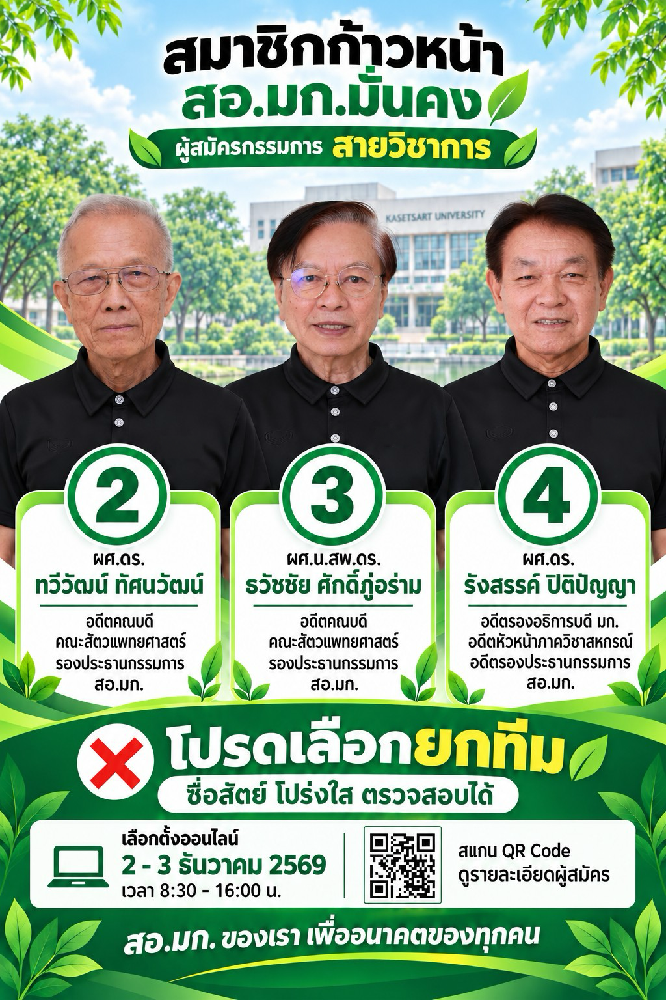
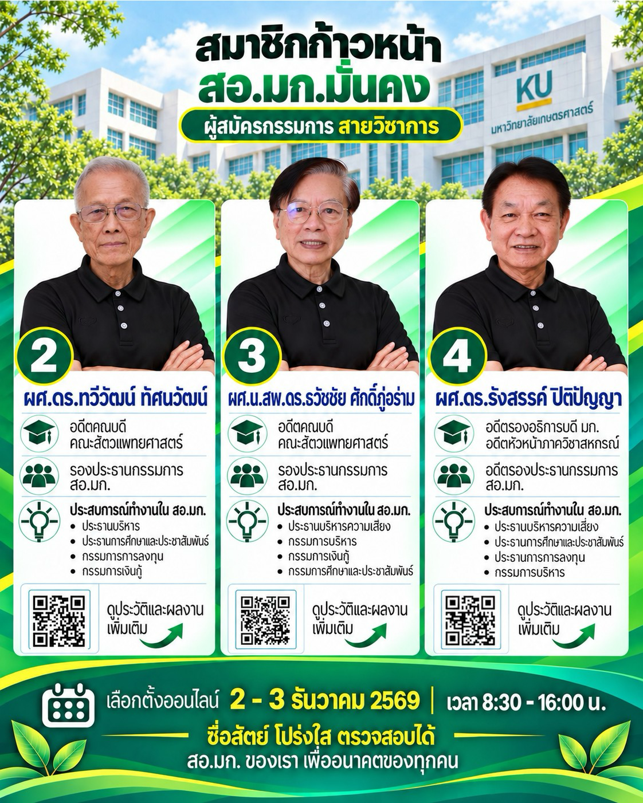
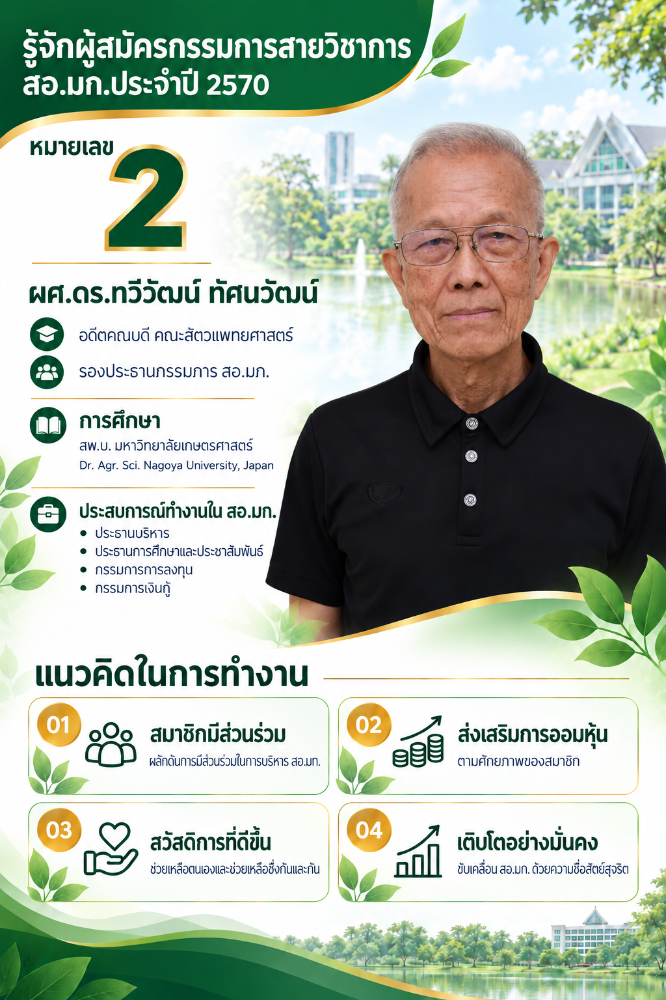
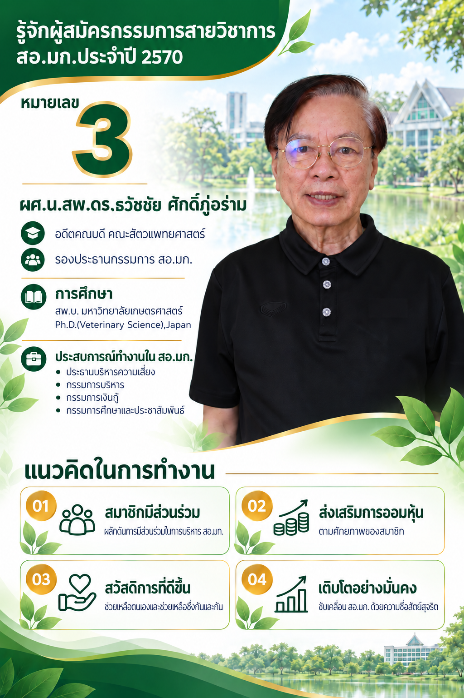
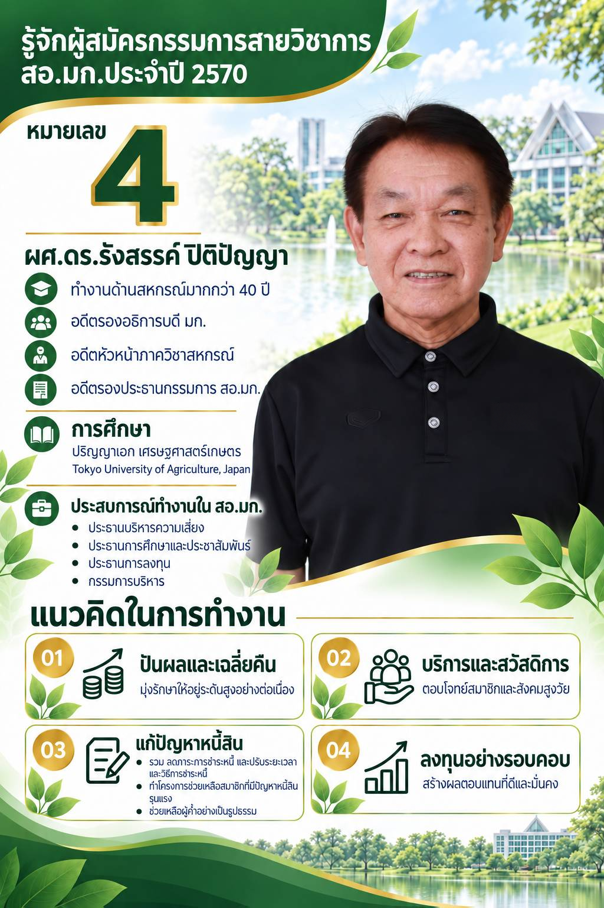
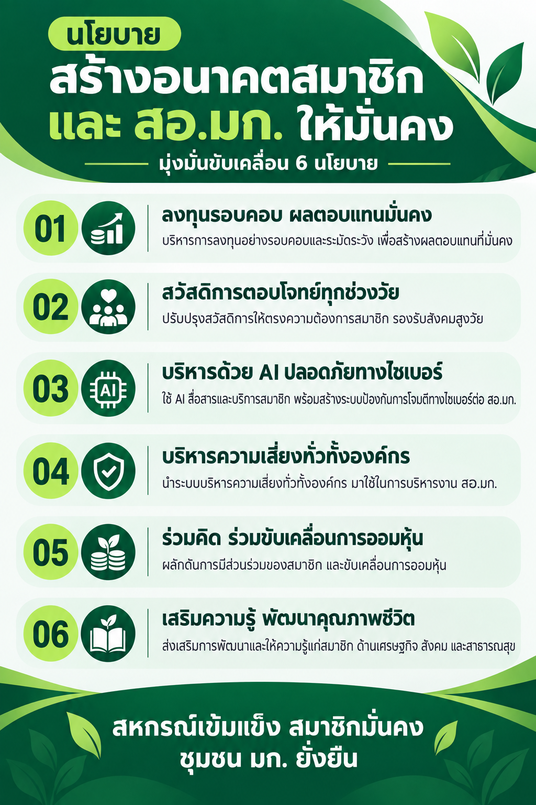

สื่อประชาสัมพันธ์ · 2570
โปสเตอร์และ
อินโฟกราฟิกทั้งหมด
แตะภาพเพื่อดูขนาดเต็ม และกดไอคอนเพื่อดาวน์โหลดไฟล์










สื่อประชาสัมพันธ์ · 2570
แตะภาพเพื่อดูขนาดเต็ม และกดไอคอนเพื่อดาวน์โหลดไฟล์





